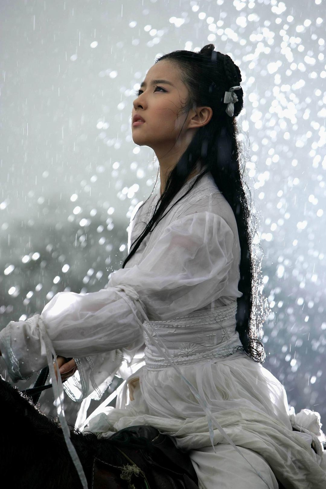
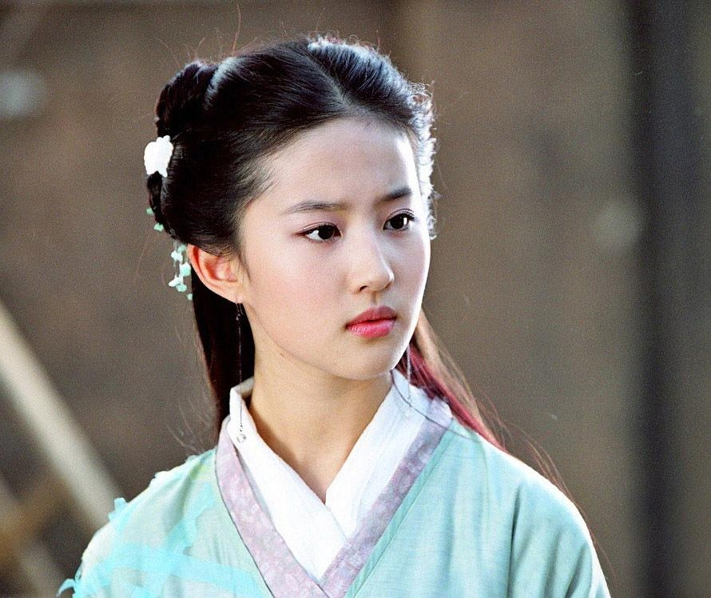
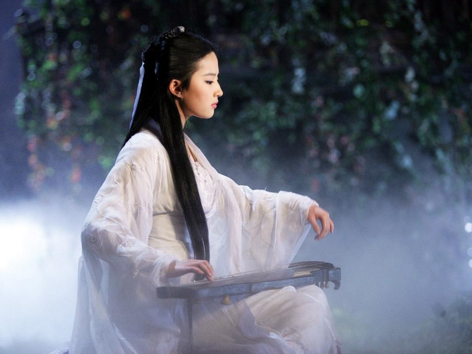
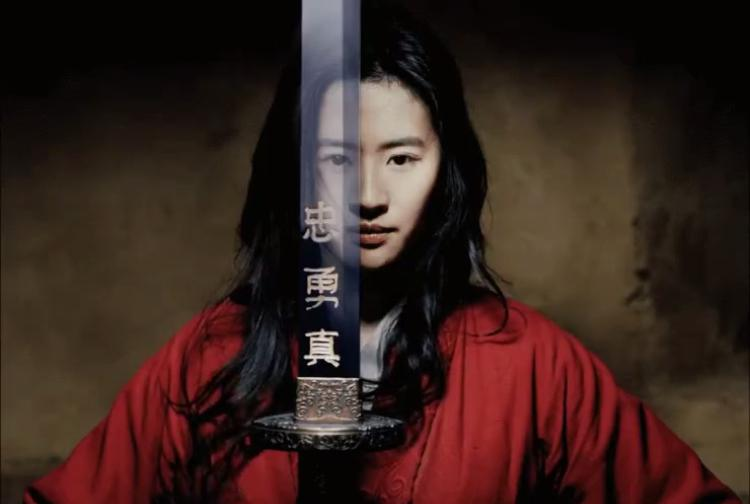
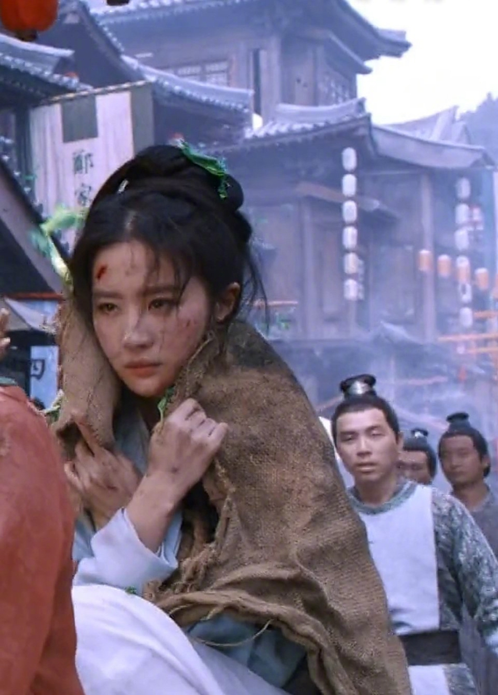
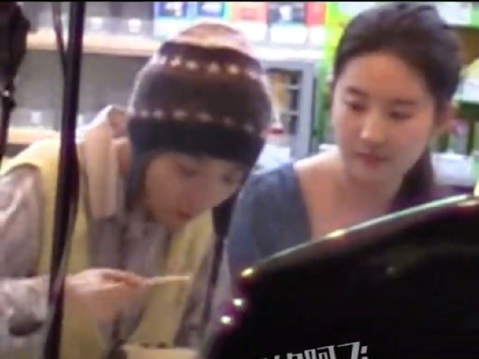
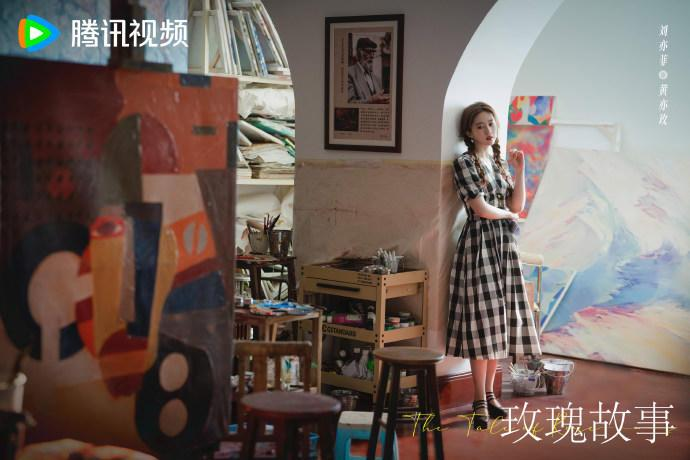

About Crystal Liu
刘亦菲（Crystal Liu），1987年8月25日出生于湖北省武汉市，华语影视女演员、歌手，毕业于北京电影学院表演系2002级本科。
2002年，年仅15岁的刘亦菲出演民国剧《金粉世家》中白秀珠一角正式踏入演艺圈。随后凭借《天龙八部》中的王语嫣、《仙剑奇侠传》中的赵灵儿、《神雕侠侣》中的小龙女等经典角色，被观众亲切地称为“神仙姐姐”。
2008年起，她将事业重心转向大银幕，主演《功夫之王》《铜雀台》《花木兰》等影片，成为首位登顶IMDB电影新人排行榜榜首的亚洲女星。2022年回归电视剧领域后，凭借《梦华录》《去有风的地方》《玫瑰的故事》再次收获口碑与热度，展现出更加成熟多面的演技。
2002
出道年份
28
影视作品
12+
获奖荣誉
7400W+
微博粉丝
Filmography
从古装仙侠到现代都市，从东方银幕到好莱坞舞台，每一部作品都是一次全新探索。

饰演：赵灵儿
古装仙侠剧经典之作，饰演天真善良、背负使命的南诏国公主赵灵儿，成为一代人的青春记忆。

饰演：小龙女
金庸武侠经典改编，饰演不食人间烟火的小龙女，成为无数观众心中的“神仙姐姐”。

饰演：花木兰
迪士尼真人版电影，刘亦菲成为首位主演迪士尼真人公主电影的华人女演员，展现东方女性的英勇与坚韧。

饰演：赵盼儿
古装励志剧，演绎北宋时期三位女子在京城创业奋斗的故事，尽显古典东方美与独立女性力量。

饰演：许红豆
田园治愈剧，讲述都市白领在云南大理寻找内心平静与生活意义的旅程。

饰演：黄亦玫
都市情感剧，讲述一位女性在爱情、事业与自我成长中的多重蜕变，引发广泛共鸣。
更多作品：电影《功夫之王》《铜雀台》《倩女幽魂》《夜孔雀》《烽火芳菲》，电视剧《天龙八部》《金粉世家》等。
Career Timeline
主演都市剧《玫瑰的故事》饰演黄亦玫，以层次丰富的表演再度引发热议，并获电视剧导演大会年度女主角奖。
主演《梦华录》饰演赵盼儿，凭该角色获第十三届澳门国际电视节金莲花最佳女主角奖。
主演迪士尼真人电影《花木兰》，成为首位华人迪士尼真人公主，并提名好莱坞评论家选择超级奖动作电影最佳女演员。
凭借古装片《铜雀台》中灵雎一角，获得第5届澳门国际电影节最佳女主角奖。
主演《神雕侠侣》小龙女一角受到广泛关注；同年成为金鹰节历史上首位金鹰女神。
15岁考入北京电影学院，同年出演《金粉世家》白秀珠一角，开启演艺生涯。